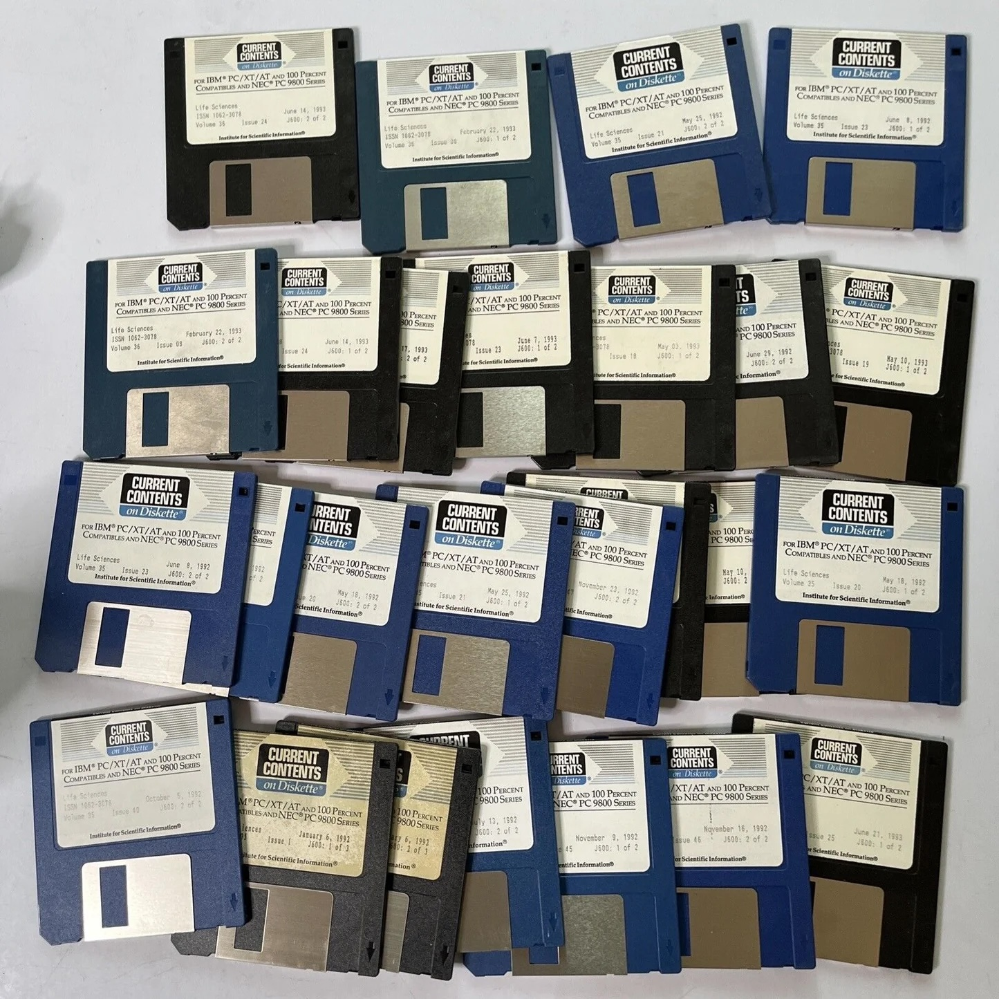

San Francisco hatte mich in vieler Hinsicht verdorben. Nicht moralisch, jedenfalls nicht mehr als ohnehin schon, sondern technisch. Dort standen im Labor Macintoshs. Kleine, helle Kästen mit Bildschirm, Tastatur, Maus und einer damals fast revolutionären Botschaft: Man konnte sich davor setzen und einfach anfangen. Für jemanden, der aus der Welt der deutschen Universitäten kam, war das fast unanständig bequem.
Der Macintosh war nicht nur ein Computer. Er war eine andere Vorstellung davon, wie Arbeit funktionieren konnte. Man musste nicht erst eine geheime Beschwörungsformel eintippen, bevor sich das Gerät überhaupt bereit erklärte, mit einem zu sprechen. Man klickte, schrieb, speicherte, druckte. Heute klingt das banal. Damals war es ein Kulturbruch. Plötzlich war ein Computer nicht mehr nur etwas für Eingeweihte mit Kittel, Hornbrille und einer Vorliebe für Befehlsketten, sondern ein Werkzeug, das einem die Arbeit erleichterte.
Dann kam ich nach Heidelberg ins Deutsche Krebsforschungszentrum und stand wieder vor diesen IBM-Mühlen. So nannte ich sie jedenfalls. Sie hatten nichts Freundliches. Sie standen da wie graue Behördenmöbel mit Stromanschluss. Bevor man irgendetwas schreiben konnte, musste man eine Zeile eingeben.Sie bestand aus Buchstaben, Querstrichen, Bindestrichen und anderen Zeichen. Ich konnte sie mir nie behalten. Vielleicht wollte ich es auch nicht.
Nach Kalifornien fühlte sich das an wie eine Zeitreise, nur in die falsche Richtung. Ich war aus einem Land zurückgekommen, in dem Computer schon begonnen hatten, persönliche Werkzeuge zu werden, und fand mich in einer deutschen Forschungsumgebung wieder, in der man sich erst einmal dem Gerät unterwerfen musste. Es war, als müsse man vor dem Schreiben eines Manuskripts beim Rechner um Audienz bitten.
Diese technische Erfahrung war für mich mehr als eine kleine Anekdote. Sie stand für etwas Größeres. In den USA hatte ich erlebt, wie selbstverständlich neue Werkzeuge genutzt wurden, wenn sie die Arbeit verbesserten. In Deutschland war man oft vorsichtiger, schwerfälliger, manchmal auch stolz darauf, dass etwas kompliziert war. Kompliziert galt leicht als seriös. Einfach galt als verdächtig.
Ich habe diese Haltung nie verstanden. Gute Technik sollte nicht beweisen, wie klug der Benutzer ist. Sie sollte verhindern, dass er seine Zeit mit Unsinn vergeudet. Wenn ich ein Manuskript schreiben wollte, wollte ich ein Manuskript schreiben und nicht vorher einen kleinen Informatikkurs absolvieren. Der Macintosh entsprach meinem Denken: direkt, übersichtlich, praktisch. Die IBM-Mühlen entsprachen eher der deutschen Universitätsverwaltung: Man kam ans Ziel, aber vorher musste man sich durch mehrere Schichten unnötiger Umständlichkeit arbeiten.
Deshalb kaufte ich mir später selbst einen Macintosh. Das war damals keine Kleinigkeit. Ein Macintosh SE mit Nadeldrucker kostete ungefähr 8000 Mark. Für einen jungen Arzt und Wissenschaftler war das ein sehr ernsthafter Betrag. Heute würde man sagen: wirtschaftlich fragwürdig. Damals sagte ich vermutlich: unbedingt notwendig. Wir fuhren sogar zu einem regionalen Apple-Geschäftsführer, wurden freundlich empfangen, beinahe hofiert. Computer waren noch nicht selbstverständlich. Wer einen Macintosh kaufte, war kein Kunde wie jeder andere, sondern Teil einer kleinen Zukunftsgemeinde.
Zu Hause stand der Macintosh dann in unserem Arbeitszimmer in der Dachgeschosswohnung in Kirchheim. Das Zimmer war ohnehin schon gut gefüllt: Schreibtisch, Regale, Lehrbücher, Manuskripte, Anträge, später auch das Kinderbett von Jan. Dort saß ich morgens vor der Klinik, abends nach der Klinik und an Wochenenden, wenn andere Menschen Dinge taten, von denen sie montags erzählen konnten. Ich schrieb Manuskripte, Anträge und Gutachten. Ich verwaltete Literatur. Ich versuchte, Ordnung in ein Leben zu bringen, das zwischen Klinik, Labor und Familie hin und her gezogen wurde.
Internet gab es noch nicht. Wer heute Literatur sucht, tippt ein paar Begriffe ein und bekommt innerhalb von Sekunden mehr Treffer, als ein normaler Mensch lesen kann. Damals kam einmal in der Woche eine Diskette von "Current Contents". Eine kleine Floppy-Disk mit Literaturdaten. Man steckte sie in den Computer, suchte die relevanten Arbeiten heraus, speicherte sie in der eigenen Datenbank und hoffte, dass man nichts Wichtiges übersehen hatte. Das war umständlich, aber für damalige Verhältnisse modern. Für mich war es ein Stück Unabhängigkeit.

Der Macintosh veränderte meine Arbeit tatsächlich. Ich konnte Texte selbst entwickeln, überarbeiten, verschieben, verbessern. Das klingt heute selbstverständlich, aber damals war wissenschaftliches Schreiben oft noch viel stärker von Sekretariaten, Schreibmaschinen und Korrekturfahnen geprägt. Mit dem Computer konnte ich so arbeiten, wie ich dachte: schreiben, ändern, wieder ändern, eine Formulierung verwerfen, einen Absatz verschieben, eine Idee festhalten, bevor sie im Klinikalltag wieder verschwand.
Rückblickend war dieser frühe Umgang mit Computern vielleicht ein kleiner Hinweis auf etwas, das mich später immer begleitet hat. Ich mochte Werkzeuge, die Arbeit besser machten. Ich mochte keine Technik um der Technik willen, aber ich mochte Technik, wenn sie Denk- und Organisationsprozesse vereinfachte. In der Medizin und in der Forschung war das keineswegs selbstverständlich. Viele hielten sich an Abläufe, weil sie immer so gewesen waren. Ich hatte dafür wenig Geduld.
Die IBM-Mühlen im DKFZ und der Macintosh zu Hause waren deshalb mehr als zwei verschiedene Geräte. Sie standen für zwei Welten. Die eine war schwerfällig, korrekt, etwas abweisend und mit unnötigen Hürden versehen. Die andere war direkt, praktisch und auf den Benutzer ausgerichtet. Dass ich mich für die zweite Welt entschieden habe, überrascht vermutlich niemanden, der mich kennt.
Natürlich hat kein Computer eine wissenschaftliche Karriere gemacht. Auch der Macintosh schrieb keine Anträge von allein, so sehr ich mir das manchmal gewünscht hätte. Aber er half mir, die viele Arbeit überhaupt zu bewältigen. Zwischen Kinderklinik, Labor, Nachtdiensten und Familie war jede Vereinfachung willkommen. Und wenn man morgens um sechs noch an einem Manuskript saß, war es ein erheblicher Unterschied, ob man mit einem Werkzeug arbeitete oder gegen es.
Manchmal beginnt Fortschritt sehr unspektakulär. Nicht mit einer großen Entdeckung, sondern mit dem Moment, in dem man vor einem grauen IBM-Kasten sitzt, eine Befehlszeile vergessen hat und denkt: Das muss doch auch einfacher gehen.